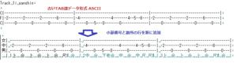

うるがいの話 ある日
最新: ＤＴＭ歴は２年近くになった【うるがいの話 ある日】とは 一日だけのプログです
『うるがいの話』の最新一日だけのプログで、通信料が少なく経済的だ。カニの画像をクリックすると全ての日付が載る『うるがいの話』サイトを表示します
|
|
【うるがいの話】 うるがい(ｳﾙｶﾞｲ urugai)とは、『もずくがに』の名前でとても大きくなります。 |
|---|---|
|
|
【カミマヤーの話】 猫のことを方言でマヤーといいます。カミマヤー（kamimayaa）とは、神の猫のことです。 |
|
【たながぁの音楽】 たながぁ（ﾀﾅｶﾞｰ tanagaa）とは手長えびのことで、何種類かあり大きいのは車 エビぐらいになります。 |

|
【ぶながぁの話】 ぶながぁ(ﾌﾞﾅｶﾞｰ bunagaa)とは、赤い髪の毛、赤い身体、そして身長は１ｍ２０ｃｍ ぐらい、川の蟹を食べているの目撃された。場所は沖縄県国頭郡大宜味村のと ある村僕の隣近所に住んでいる爺さんから、聞いた話です。 |
|
|
【ギーマの話】 ギーマ(giima)とは、山原の里山に咲くスズランに似た、 花を付けます。実は食べられます、 気が付くと口の周りが紫になっています。 |
2023年06月23日 (金）ＤＴＭ歴は２年近くになった
15:44


昨日、ウォーキングをすると２か所の塾が閉ざされていた。ヨメが、コロナで
休みになっている筈と言っていた。夜、マンションに寄ったが、途中救急車が
、患者が探せないのかウロウロしていた。コロナのせいで、搬送先の調整を
ているとかとヨメは言っていたが、それは違うだろうと答えた。
昨日から、Ｂｉｔｂｕｃｋｅｔ（うるがいの話 ある日、たながぁの音楽）に
今日、『イマジン Ｉｍａｇｉｎｅ 三線 ＭｕｓｅＳｃｏｒｅ３』をユーチ
ューブ動画にアップした。一回目は、２０２１／１０／０２『ぶながぁの作品
第００番』というタイトルで【禁じられた遊び（愛のロマンス）】の演奏だ
った。チャンネル登録が５名なので、今は恥ずかしいので公開していないが
（制限公開にした）。今回の作成は一週間ほど手順は、次のとおりである。
１．ネタとなる楽譜を探す（無料のSheetMusic-Free.comからpdfをゲット)
２．楽譜ＰＤＦ４頁に小節番号を全て割りつける。
楽譜ソフトに音符を打ち込む時に全ての小節番号がないと、混乱する。当
初はプリントして鉛筆で描いていた（反復等があると・・・）。
今回は３９小節、Inkscape(無料のグラフィックエディター)を利用する。
３．楽譜ソフトＭＵＳＥＳＣＯＲＥ３に楽譜を打ち込む。
今回の楽譜は、楽器はピアノ、メロディーがト短調、ベース音のヘ短調の
譜表が２つ。
４．メロディーを三線として、音色をShamisen（三味線）にしてみる。
キーが、三線向け（基本調弦）なのか、３弦にして音符を工工四（勘所）
にして、暫定的に確認する（詳細は後で出てくる手順）。今回は、特に問
題なかった。（キーが合わない場合は、三線向けに合うよう、元の楽譜を
移調する）
５．編曲作業。元の楽譜通りにメロディーを三線展開しただけでは、イマイチ
のである。メロディーの音符は変更せず、ベースの音符を元に、不遜にも
三線の音符を編曲する。
６．Musescore3から工工四対応するため別の楽譜ソフトTuxGuitar楽譜ソフト
へ楽器デジタルインターフェイス（MIDI）ファイルを経由する。移植され
た楽譜データは、ギターを基準にしているので６弦(E3,A3,D4,G4,B4,E5)
である。それを三線向けの３弦(C4,F4,C5)に変更する。
７．楽譜を工工四対応へ展開する。TuxGuitar楽譜ソフトの三線のトラックを
エクスポート ASCIIで古い楽譜データ形式のファイルへ展開する。
そのファイルをPerlアプリで、勘所を展開する。

８．勘所が展開された古い楽譜データを元に、Musescore3の三線のＴＡＢ譜
の音符の譜表テキストに手作業で貼り付ける。いつも三線を弾いていれば
勘所は、７で作成した工工四対応はいらないのだが・・・。ユーチューブ
動画なので間違えると恥ずかしい・・・。
９．ユーチューブ動画向けに動画を収録する。
有料のＢ’ｓ動画レコーダーを使って演奏している動画を撮る。音楽ソ
フトを再生するときは、自作の三線サウンドフォント（この作成手順はか
なりの作業量、説明は割愛）を使う。そして、収録された動画の音量が適
正になるよう、ffmepg(動画と音声を記録・変換・再生するためのフリー
ソフトウェア）を使って音量を調整。なお以前は、字幕や画像を挿入する
のにAdobe Premiere Elements9（ヤフーオークションでゲット）を使用
していたが、めんどいので歌詞は楽譜データ上で展開させている、今回は
使用なし。
１０．楽譜ＰＤＦや、楽譜データを『たながぁの音楽サイト』へアップ
ユーチューブ動画からダウンロードできるように無料で利用できるＢｉｔ
ｂｕｃｋｅｔへＳｏｕｒｃｅｔｒｅｅ（無料のＧｉｔクライアントソフト
）を使ってアップする。
※Ｂｉｔｂｕｃｋｅｔへはきのう無事接続できた、詳細はのちほど。
１１．ユーチューブ動画サイトで、動画をアップする。最初は、制限公開でユ
ーチューブサイトで、動画を再生した後、問題なければ世界へ公開。
補記。ユーチューブで事前に、『イマージン Ｉｍａｇｉｎｅ 三線』で検索
動画がかぶっていないか、念のため確認する、大丈夫のようだ。動画のアップ
を除いて、先週の土曜日から昨日の木曜日で作業を終える。暇人だな・・・・
当初は、県立図書館から借りた音楽の本にピアノの『ボレロ』の楽譜が、あっ
たのでピーンと次のユーチューブ動画の作品にしようと、音楽の本をアマゾン
で購入した。ところがである買った本は、県立図書館から借りた本でなく別版
で『ボレロ』の曲は、無かった。慰霊の日も近づいていることから、イマージ
ンにした。著作権の問題はあるとのことだが、利益を得ないのであればアップ
ＯＫとなっている。ま、想定内なので・・・。
１５時２８分 ビットコインの総資産 ￥１２、４３６（↑７０）
DTMとはDesk Top Music(デスクトップミュージック)の略で、パソコンを使
用して音楽を作成編集する事の総称。